Kerja sama internasional adalah kerja sama yang melibatkan dua atau lebih negara yang bersifat umum dan tidak terikat pada jumlah anggota dan asal negara. Kerja sama internasional dilakukan untuk pemenuhan kebutuhan rakyatnya dan kepentingan bersama. Tujuan kerja sama internasional adalah mempererat hubungan diplomatis antarnegara, menciptakan kedamaian, meningkatkan pertumbuhan ekonomi dan pembangunan, memperluas pasar dan akses barang dan jasa, memenuhi kebutuhan negara, serta menyelesaikan masalah bersama melalui bantuan satu sama lain. Melalui kerja sama antarnegara, para negara dapat saling melengkapi kekurangan masing-masing dengan menyediakan informasi, teknologi, pendanaan, pengetahuan, serta sumber daya agar dapat menyelesaikan masalah secara lebih efektif. Terutama dengan kekurangan Indonesia dalam bidang akses teknologi, pengetahuan, dan SDM, maka Indonesia butuh untuk melakukan kemitraan bersama negara-negara lain agar tujuan SDGs diwujudkan secara efektif dan efisien. Kerja sama internasional yang dilakukan oleh Indonesia terdiri atas bilateral, regional, dan multilateral.
Jenis Kerjasama Internasional
Bilateral
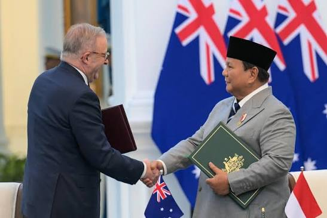
Kerja sama bilateral adalah hubungan formal antara dua negara berdaulat yang mencakup kerja sama melalui perjanjian atau kesepakatan dalam berbagai sektor politik, budaya, sosial, keamanan, lingkungan, dan ekonomi. Kerja sama bilateral bersifat resmi dan dijalankan melalui pertemuan antara pejabat/diplomat kedua negara. Tujuan dari kerja sama bilateral adalah untuk saling mendukung dan menguntungkan melalui ekspor impor dan pembagian teknologi maupun pengetahuan, menghindari konflik dan menjaga stabilitas politik, dan membuka peluang kerja sama yang lebih besar. Kerja sama bilateral mempunyai prinsip untuk saling menghormati, tidak campur tangan urusan dalam negeri, dan mencapai kesepakatan demi kepentingan bersama.
Regional
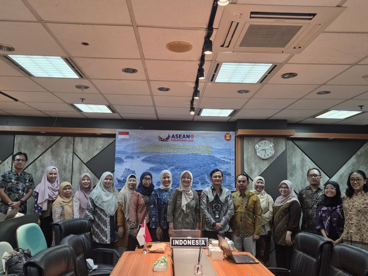
Kerja sama regional adalah kerja sama antarnegara yang berdekatan di suatu kawasan yang melibatkan lebih dari dua negara. Kerja sama regional dibentuk berdasarkan kedekatan geografis, kesamaan latar belakang budaya, sejarah, serta kepentingan ekonomi, politik, sosial, lingkungan, dan keamanan. Beberapa contoh organisasi dan program kerjasama regional adalah ASEAN dan AFTA. Tujuan kerja sama regional sesuai kepentingan masing-masing negara, dengan tujuan umum memajukan negara-negara di suatu kawasan. Kerja sama regional dapat terjadi di negara berkembang maupun negara maju, karena ia membantu untuk mempercepat pencapaian tujuan bersama seperti Agenda 2030.
Multilateral
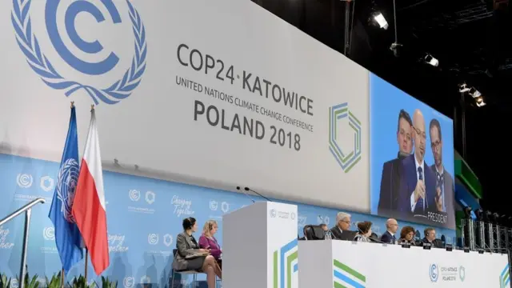
Kerja sama multilateral adalah kerja sama yang melibatkan tiga negara atau lebih yang secara aktif menyepakati kerja sama untuk kepentingan bersama. Kerja sama multilateral biasanya dilaksanakan melalui forum internasional atau organisasi multinasional seperti PBB, WTO, IMF, dan ASEAN. Kerja sama ini meliputi pertemuan diplomatik, aksi nyata, perjanjian, program pembangunan, dan penanggulangan krisis global. Kerja sama multilateral bergantung pada prinsip kesetaraan, kedaulatan, transparansi, dan kepentingan bersama. Kerja sama multilateral dapat membuka akses pasar lebih luas, menarik investasi asing, memfasilitasi pertukaran teknologi, pengetahuan, dan sumber daya.
Kerjasama Bilateral
Indonesia melakukan sejumlah kerjasama bilateral demi perwujudan SDGs ke-13. Beberapa di antaranya:
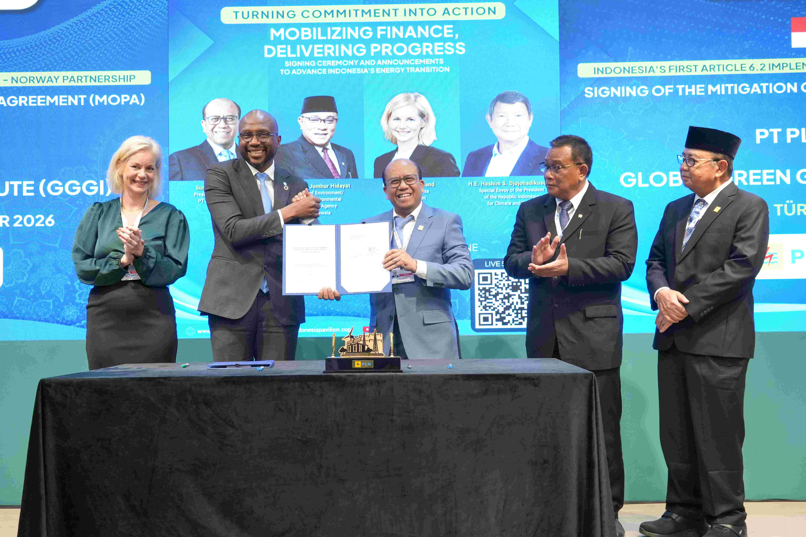
Kerjasama dengan Norwegia
Indonesia dan Norwegia memiliki riwayat panjang melalui program Kontribusi Berbasis Hasil sejak tahun 2010, dengan tahap 1-4 senilai USD 216 juta dan tahap 5 yang baru diumumkan di November 2026 senilai USD 100 juta. Kerja sama ini dalam bentuk pendanaan dari Norwegia untuk dikelola demi penurunan emisi dalam sektor kehutanan dan penggunaan lahan (FOLU) melalui perlindungan hutan, rehabilitasi ekosistem, pengendalian kebakaran, serta pemberdayaan masyarakat. Semua dana dikelola oleh Badan Pengelola Dana Lingkungan Hidup (BPDLH), dan pembiayaannya juga menjangkau 863 kelompok masyarakat di 31 provinsi untuk mendukung penanaman 948.916 pohon serta pengelolaan ekosistem. Selain itu, Indonesia dan Norwegia menandatangani Mitigation Outcome Purchase Agreement (MOPA) yang menargetkan pengurangan emisi hingga 12 juta ton CO₂e melalui proyek energi terbarukan seperti PLTS terapung dan penyimpanan energi sampai tahun 2038.
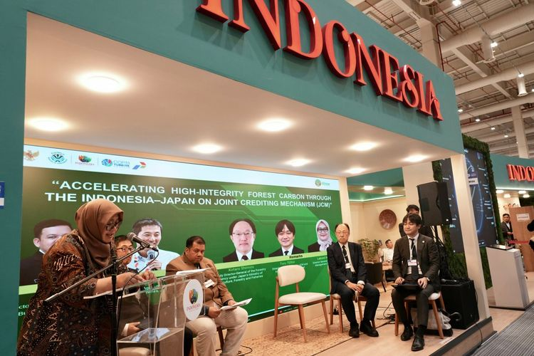
Kerjasama dengan Jepang
Indonesia dan Jepang bekerja sama sejak 2013 sampai 2030 melalui Joint Crediting Mechanism untuk pengembangan penyerapan karbon melalui hutan, restorasi gambut dan mangrove, serta penurunan emisi gas rumah kaca melalui pembagian teknologi, pendanaan, dan peningkatan kapasitas. Selain itu, diadakan Indonesia-Japan Energy Forum (IJEF) untuk pengembangan energi terbarukan, bahan bakar rendah karbon, serta pengolahan sampah menjadi energi listrik yang sudah dilakukan dengan proyek Legok Nangka di Jawa Barat. Melalui Indonesia-Japan Environment Week (IJEW) yang diadakan Kementerian Lingkungan Hidup dan Ministry of the Environment Japan, juga terjadi pertukaran teknologi dan kebijakan mengenai pengelolaan sampah, pengendalian perubahan iklim dan polusi udara, serta pengolahan air limbah.
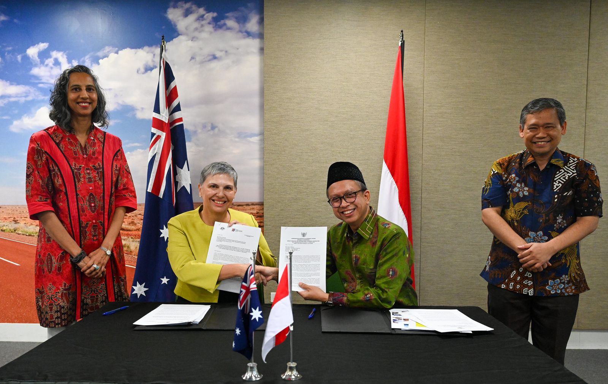
Kerjasama dengan Australia
Indonesia dan Australia bekerja sama melalui kemitraan KINETIK (Kemitraan Indonesia-Australia untuk Iklim dan Infrastruktur Berkelanjutan) yang diluncurkan pada Agustus 2026 sampai 2036 untuk proyek energi terbarukan, pengelolaan sampah, air dan sanitasi, transportasi berkelanjutan, dan pembangunan inklusif. KINETIK didukung dengan investasi USD 35 juta dari KINETIK Affirma Capital Climate Transition Fund untuk Bright Nusantara Energy yang mengoperasikan proyek tenaga mikrohidro dan surya di Sumatera Barat, Gorontalo, dan Lombok Timur. Selain itu, ada investasi USD 13 juta dari Australian Development Investments (ADI) ke Circulate Capital Asia Fund II yang mendukung perusahaan-perusahaan yang mengembangkan solusi daur ulang dan pengelolaan sampah. Terakhir, investasi USD 16,65 juta melalui ADI untuk Asia Climate-Smart Landscape Fund, yang membiayai perusahaan Indonesia di bidang pertanian berkelanjutan, agroforestri, dan akuakultur. Indonesia dan Australia juga bekerja sama melalui Indonesia-Australia Forest Carbon Partnership (IAFCP) untuk menekan emisi dari deforestasi, memperkuat sistem perhitungan karbon, dan mendukung pengukuran hutan.
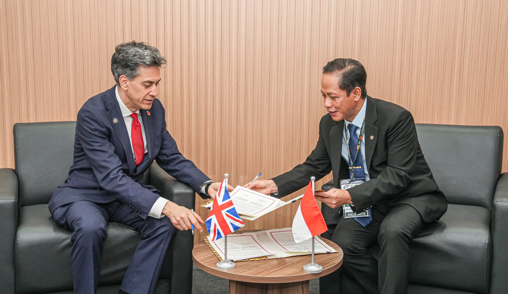
Kerjasama dengan Inggris
Indonesia dan Inggris saling bekerja sama untuk mencapai FOLU Net Sink 2030, dengan adanya pendanaan dari UK FCDO sekitar USD 7,27 juta untuk mengelola lahan gambut dan komoditas hasil hutan/pertanian di Indonesia. Indonesia dan Inggris menandatangani Memorandum of Understanding (MoU) pada November 2025, yang menjadi komitmen untuk mempercepat transisi menuju ekonomi rendah karbon dan berketahanan iklim, dengan target transaksi karbon 90 juta ton CO₂ senilai Rp 15 triliun. Adapun Joint Steering Committee (JSC) yang memastikan bahwa Indonesia dan Inggris akan bekerja sama untuk penguatan mitigasi dan adaptasi perubahan iklim, tata kelola karbon yang transparan, dan integrasi pembangunan rendah karbon. Beberapa aksi nyatanya mencakup penyusunan peta Nilai Ekonomi Karbon untuk mengatur pajak karbon dan perdagangan emisi dari penerbangan domestik, program MENTARI dan inisiatif GETI yang fokus terhadap transisi energi, serta konservasi hutan dan keanekaragaman hayati melalui pengelolaan 57 taman nasional.
Melalui kerjasama bilateral, Indonesia mendapatkan dukungan dan pendanaan bagi program-program yang dilakukan demi meredakan perubahan iklim. Oleh karena itu, emisi gas rumah kaca di Indonesia dapat menurun secara lebih cepat, ekosistem kehutanan dapat terjaga dengan baik, serta masyarakat mendapatkan pemberdayaan sehingga menjadi lebih cermat dalam mengelola sumber daya beserta menjalani gaya hidup yang berkelanjutan.
Kerjasama Regional
Indonesia melakukan sejumlah kerjasama regional demi perwujudan SDGs ke-13. Mayoritas dari kerjasama regional dilakukan di kawasan Asia Tenggara atau dikenal juga sebagai ASEAN, yang meliputi Indonesia bersama dengan Malaysia, Singapura, Thailand, Filipina, Brunei Darussalam, Vietnam, Laos, Myanmar, Kamboja, dan Timor Leste. Beberapa di antaranya:
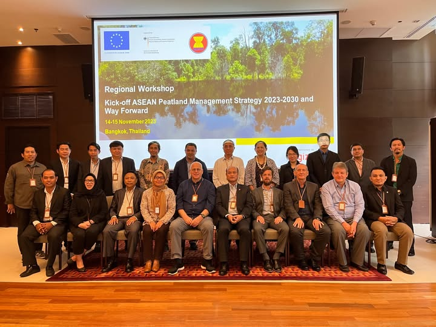
ASEAN Peatland Management Strategy (2023-2030)
Indonesia mempunyai 70% dari area lahan gambut tropis di kawasan ASEAN (sekitar 25 juta hektare) dengan biodiversitas yang tinggi, sehingga memiliki peran besar dalam ASEAN Peatland Management Strategy. Indonesia berpartisipasi secara aktif dalam menyusun kebijakan ASEAN Haze-Free Roadmap untuk menargetkan penurunan emisi gas, menerapkan kebijakan nasional tanpa karhutla, serta menjalankan program restorasi gambut berbasis skema 3R (Rewetting, Revegetation, Revitalization) dan tata kelola siklus air bagi gambut. Selain itu, melalui lembaga riset seperti International Tropical Peatlands Center (ITPC), Indonesia menjadi rujukan dalam solusi pencegahan dan pengatasan kebakaran lahan gambut melalui teknologi peringatan dini serta peningkatan kapasitas pengelolaan gambut berkelanjutan bagi negara-negara anggota ASEAN lainnya. Melalui perlindungan lahan gambut, tercipta ketahanan iklim, kelestarian lingkungan, penurunan emisi gas rumah kaca, serta peningkatan kesejahteraan masyarakat lokal. Indonesia sendiri sudah menciptakan lebih dari 30 kebijakan yang berhubungan dengan regulasi lahan gambut, salah satunya PP No. 57 Tahun 2016. Agar kerjasama berjalan secara lancar, negara ASEAN lainnya juga aktif mengimplementasi kebijakan pengelolaan lahan gambut di perencanaan nasional, menerapkan solusi dan aksi nyata untuk perawatan lahan gambut, serta berbagi pengetahuan, teknologi, dan sumber daya.
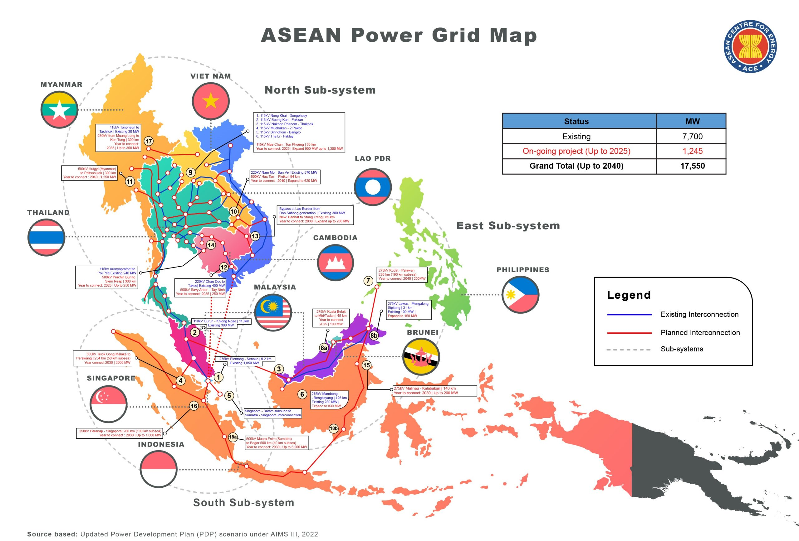
ASEAN Power Grid
ASEAN Power Grid merupakan program yang sudah digagas sejak 1997, kemudian disahkan pada 2007 dan dijalankan hingga sekarang. Indonesia menjadi penghubung geografis utama yang memudahkan perdagangan listrik di seluruh kawasan ASEAN, dengan jalur Indonesia-Singapura-Malaysia-Thailand-Vietnam serta Brunei Darussalam-Malaysia-Filipina-Indonesia. Selain itu, Indonesia juga merencanakan jalur koneksi baru seperti Sumatra-Semenanjung Malaysia, Kalimantan Utara-Sabah, dan Batam-Singapura untuk semakin melancarkan perdagangan listrik. Indonesia sendiri mempunyai potensial besar dalam menyediakan sumber daya terbarukan berupa hidro, surya, dan panas bumi yang mendukung perdagangan listrik serta peluang investasi energi. Sementara itu, negara ASEAN lainnya saling melengkapi sesuai dengan kapasitas sumber daya dan letak geografis masing-masing, seperti menjadi pemasok listrik tenaga air/surya, penghubung jalur transmisi, pembangun jaringan interkoneksi, dan peningkatan kapasitas pembangkit.
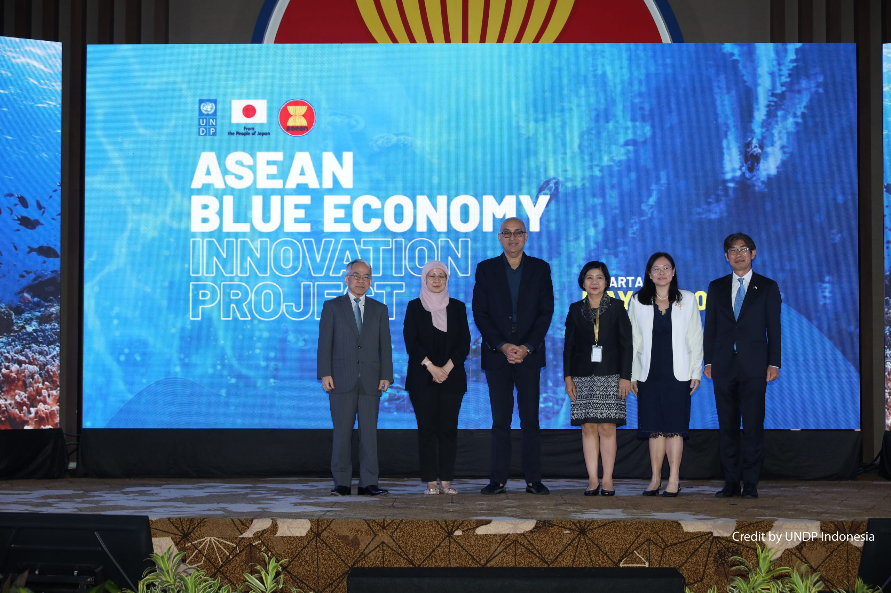
ASEAN Blue Economy
Indonesia menjadi pendorong untuk implementasi dan pengesahan kebijakan ASEAN Blue Economy pada 2026-2030. Indonesia juga sering menjadi tuan rumah untuk berbagai forum dan rapat untuk mendiskusikan progres ASEAN Blue Economy, seperti forum ASEAN-ID Blue di Banyuwangi yang fokus terhadap penggunaan sumber daya secara bijak. Kementerian Kelautan dan Perikanan juga mengadakan program prioritas yang meliputi perluasan konservasi laut, penangkapan ikan terukur berbasis kuota, pembangunan budidaya laut, pesisir dan darat yang berkelanjutan, pengawasan dan pengendalian kawasan pesisir dan pulau-pulau kecil, serta pembersihan sampah plastik melalui gerakan partisipasi nelayan atau bulan cinta laut. Di sisi lain, negara-negara ASEAN juga mengintegrasikan keberlanjutan sumber daya laut, pesisir, dan perairan tawar ke dalam kebijakan nasional masing-masing. Juga, para negara ASEAN berkolaborasi dalam mengembangkan riset, inovasi ramah lingkungan, pengendalian polusi plastik, transportasi maritim rendah karbon, pariwisata bahari berkelanjutan, memperluas perdagangan produk perikanan, menarik investasi hijau, dan meningkatkan kapasitas sumber daya manusia di bidang kelautan.
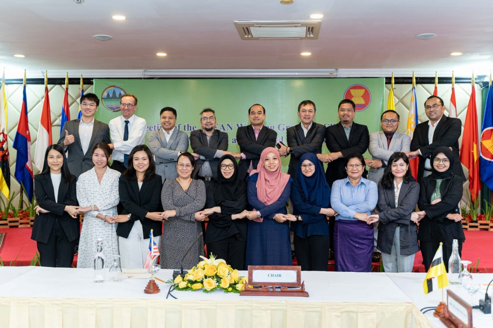
ASEAN Working Group for Climate Change
Indonesia aktif dalam memimpin pertemuan AWGCC, seperti menjadi Vice-Chair pada pertemuan ke-15 di Bali pada 2024 ketika membahas mitigasi bencana iklim. Indonesia dipercaya sebagai pemimpin program-program seperti Nationally Determined Contributions dan penyusun Rencana Aksi (POA) 2026-2030 yang mempresentasikan hasil penurunan emisi gas rumah kaca. Adapun aksi nyatanya berupa Proklim (Program Kampung Iklim) yang melibatkan 11.000 desa yang mengubah gaya hidupnya sehingga menjadi lebih ramah lingkungan. Bersama dengan negara ASEAN lain, Indonesia berkomitmen untuk ASEAN Strategy on Carbon Neutrality, dengan menopang target Enhanced Nationally Determined Contribution (ENDC) sektor kehutanan untuk mencapai FOLU Net Sink 2030 (kondisi di mana penyerapan karbon oleh hutan dan lahan setara atau lebih tinggi dari emisi yang dilepaskan). Indonesia juga menjadi penggagas untuk ASEAN Community Based Climate Action, yang telah mengidentifikasi lebih dari 100 praktik terbaik aksi iklim berbasis masyarakat di seluruh kawasan. Negara-negara ASEAN lain berperan dengan Negara-negara anggota ASEAN lainnya juga mengoordinasikan aksi iklim dan perkembangan kebijakan nasional masing-masing, aktif dalam forum global, merumuskan prioritas dan kerentanan dalam ASEAN Joint Statement menjelang sidang COP UNFCCC. Beberapa contohnya adalah Program Adaptasi Berbasis Alam Penang di Malaysia dan pengelolaan hutan berbasis masyarakat menjadi model adaptasi sekaligus konservasi lingkungan di Filipina.
Kerjasama regional fokus terhadap transisi terhadap energi terbarukan, pelestarian lingkungan sekitar seperti lahan gambut dan ekosistem laut, dan penerapan gaya hidup berkelanjutan bagi masyarakat. Aksi-aksi ini mempunyai dampak langsung untuk penanganan perubahan iklim, karena secara perlahan meredakan dan mencegah perubahan iklim melalui pengurangan emisi gas rumah kaca. Melalui aksi yang dilakukan di suatu kawasan dan bukan hanya satu negara, maka penanganan perubahan iklim menjadi lebih efektif.
Kerjasama Multilateral
Indonesia melakukan sejumlah kerjasama multilateral demi perwujudan SDGs ke-13. Beberapa contoh forum dan organisasi adalah PBB, WTO, dan IMF. Biasanya, kerjasama multilateral meliputi seluruh negara di dunia, karena dilakukan melalui forum global. Beberapa di antaranya:
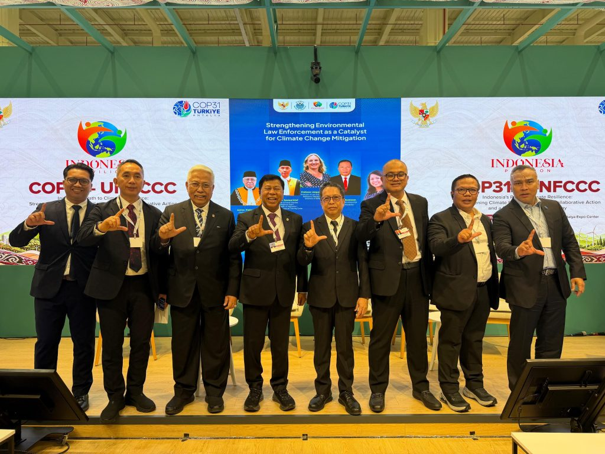
Perserikatan Bangsa-Bangsa
Dalam PBB, Indonesia dan negara-negara lain bekerja sama untuk menanggulangi krisis iklim melalui komitmen penurunan emisi, pendanaan, serta perlindungan ekosistem sesuai prinsip tanggung jawab bersama. Indonesia sendiri berperan aktif dengan menerapkan hasil dari Perjanjian Paris dalam UU No. 16 Tahun 2016, menetapkan target pengurangan emisi gas rumah kaca dalam dokumen Nationally Determined Contributions (NDC), mengelola sektor kehutanan dan lahan lewat target FOLU Net Sink 2030, melakukan transisi energi terbarukan, dan mengembangkan pasar karbon. Selain itu, Indonesia aktif mengikuti diplomasi multilateral pada Conference of the Parties (COP), seperti pertemuan ke-31 di mana Indonesia meluncurkan proyek karbon biru di Kalimantan Utara, Pantai Utara Jawa, dan Belitung Timur untuk menjaga ekosistem mangrove dan padang lamun. Pada Sidang Umum PBB di September 2026, tepatnya di forum Climate Summit, Indonesia menegaskan bahwa aksi iklim harus sejalan dengan pertumbuhan ekonomi, ketahanan energi, dan kesejahteraan masyarakat. Indonesia juga aktif melaporkan progres dalam mencapai tujuan bersama, seperti menyampaikan NDC yang kedua yang memuat target penurunan emisi gas rumah kaca hingga 2035, progres rehabilitasi mangrove seluas 600.000 hektare, serta memaparkan solusi pengendalian kebakaran hutan dan lahan melalui pemantauan satelit, pencegahan, pemadaman, dan penegakan hukum yang menurunkan kebakaran hutan sebesar 82% pada 2020. Selain itu, negara-negara lainnya berkontribusi dengan menyusun target NDC masing-masing dan mengevaluasi capaian. Negara maju menyediakan pendanaan iklim, transfer teknologi, serta peningkatan kapasitas bagi negara berkembang. Sementara itu, negara berkembang harus mendorong aksi iklim di negara masing-masing dengan dukungan yang diberikan.
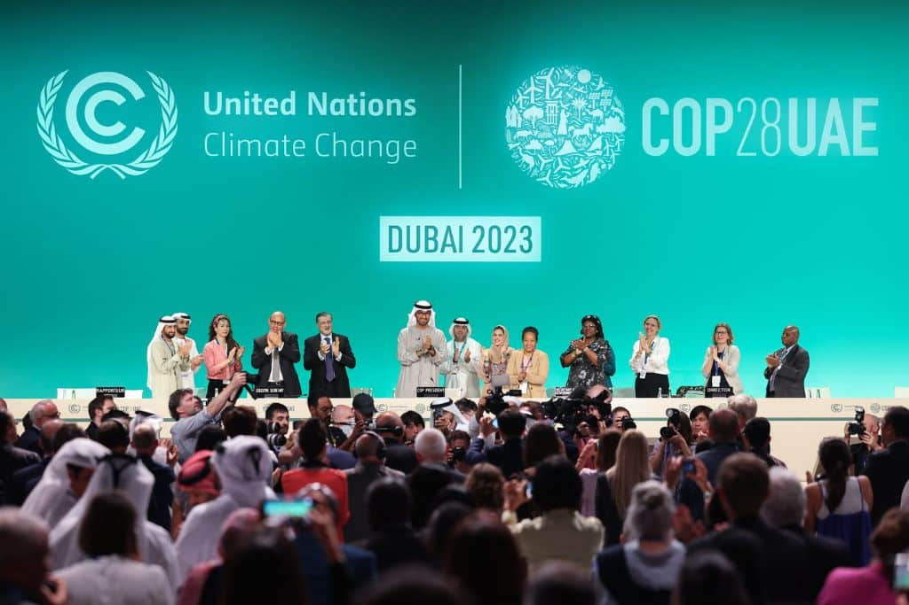
United Nations Framework Convention on Climate Change (UNFCCC)
Indonesia terlibat aktif di UNFCCC sejak konferensinya yang pertama, dan memperkuat komitmen bersama melalui dokumen NDC yang menargetkan penurunan emisi, menyerahkan Biennial Transparency Report (BTR), menerapkan mekanisme REDD+ (pengurangan emisi dari deforestasi dan degradasi hutan), serta merancang Longterm Strategy on Low Carbon and Climate Resilience 2050 (LTS-LCCR 2050). Indonesia juga mengesahkan Perpres No. 110 Tahun 2025 berisi target NDC, peraturan pasar karbon internasional, dan standar transparansi dalam mengukur karbon untuk memenuhi Persetujuan Paris. Indonesia menjadi perwakilan penting yang menyuarakan kepentingan negara berkembang dan negara kepulauan untuk aksi iklim. Beberapa hasil nyata Indonesia dalam mewujudkan tujuan bersama UNFCCC adalah penanaman seluas 19.000 hektare dengan estimasi penyerapan karbon 45.000 ton CO₂, yang mendukung konservasi sekitar 10.000 hektare kawasan daerah aliran sungai. Negara lainnya berperan sesuai dengan prinsip bersama tetapi berbeda, melaporkan pencapaian NDC, menyediakan pendanaan iklim bagi negara berkembang, memfasilitasi alih teknologi ramah lingkungan, dan meningkatkan kapasitas bagi negara-negara rentan iklim.
Kerjasama multilateral fokus terhadap transisi energi terbarukan, pelestarian lingkungan sekitar seperti lahan gambut dan ekosistem laut, serta penerapan gaya hidup berkelanjutan bagi masyarakat. Aksi-aksi ini mempunyai dampak langsung untuk penanganan perubahan iklim, karena secara perlahan meredakan dan mencegah perubahan iklim melalui pengurangan emisi gas rumah kaca. Melalui aksi yang dilakukan secara global dan bukan hanya satu negara, penanganan perubahan iklim menjadi lebih efektif.